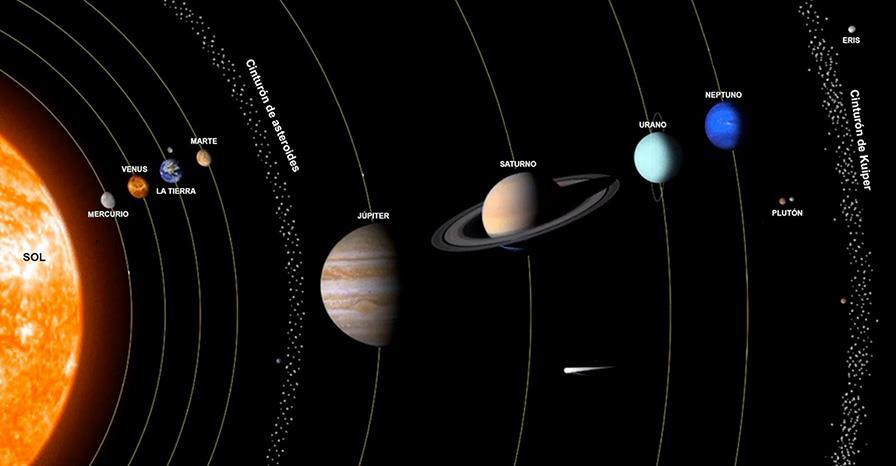
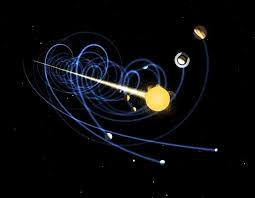

----SISTEMA SOLAR----
El sistema solar es un sistema planetario. Un sistema planetario está constituido por una estrella (o en ocasiones un conjunto de estrellas) y los cuerpos celestes que giran a su alrededor, es decir, que se encuentran bajo la influencia de su campo gravitatorio.
El Sol es la estrella que está en el corazón de nuestro sistema solar. Su gravedad mantiene unido al sistema solar y hace que todo se conserve dentro de su órbita.

¿Cómo se mueve el Sol por la Vía Láctea?
Igual que la Luna gira alrededor de la Tierra, el Sol también da vueltas en torno al centro de la Vía Láctea. El sistema solar tarda 235 millones de años en completar una vuelta.
¿Cuáles son los planetas que hay en el Sistema Solar?
|
¿Cuántas lunas hay en el sistema solar?
El sistema solar tiene más de 200 lunas conocidas orbitando alrededor de los planetas y otros cuerpos celestes.
- Mercurio y Venus: No tienen lunas.
- Tierra: Tiene 1 luna, la famosa Luna.
- Marte: Tiene 2 lunas pequeñas, Fobos y Deimos.
- Júpiter: Es el rey de las lunas, con 92 satélites conocidos.
- Saturno: Muy cercano a Júpiter en número, con 146 lunas confirmadas.
- Urano: Cuenta con 28 lunas.
- Neptuno: Tiene 16 lunas conocidas, siendo Tritón la más grande.
Además, los planetas enanos como Plutón, Eris y Haumea también tienen sus propios satélites.